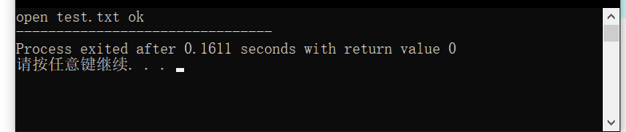

#if expression如果表达式(expression)的值是"真"(true),那么紧随该命令的代码将会被编译.
#ifdef macro如果"macro"已经在一个#define声明中定义了, 那么紧随该命令的代码将会被编译.
#ifndef macro如果"macro"未在一个#define声明中定义, 那么紧随命令的代码将会被编译.
一些小边注: 命令#elif是"elseif"的一种缩写,并且他可以想你所意愿的一样工作. 你也可以在一个#if后插入一个"defined"或者"!defined"以获得更多的功能.
这里是一部分例子:
#ifdef DEBUG
cout << "This is the test version, i=" << i << endl;
#else
cout << "This is the production version!" << endl;
#endif你应该注意到第二个例子比在你的代码中插入多个"cout"进行调试的方法更简单.
1、用于注释掉一段代码
我们自己编写程序的时候，需要看到一系列的调试代码，但是发给客户的时候，客户可不希望看到什么什么OK的代码，所以我们希望能很容易地注释掉这段代码。
这时需要用到预处理指令 #ifdef 和 #endif ：
#include <stdio.h>
#define CONFIG_DEBUG
int main(){
FILE *fp;
fp=fopen("D:\\text.txt","r");
if(NULL==fp){
printf("error!");
}
#ifdef CONFIG_DEBUG
printf("open test.txt ok");
#endif
return 0;
}如果文件在那个路径没错的话，将会打印如下信息：

a.h
#include <stdio.h>
#include "b.h"b.h
#include "a.h"c.c
#include "a.h"
#include "b.h"
int main(){
printf("Hello!");
}如果你程序是这样写的话，编译器就会出现Error #include nested too deeply的错误。
因为这里 b.h 和 a.h 都互相包含，c.c文件在include的时候重复include了a.h，我们希望c.c文件中执行#include "b.h"的时候 b.h 能进行判断，如果没有#include "a.h"则include，如果已经include了，则不再重复定义。
可以将b.h修改为：
#ifndef _A_H
#define _A_H
#include "a.h"
#endif